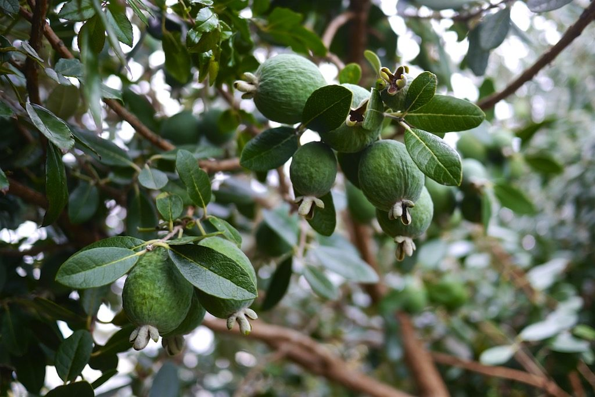
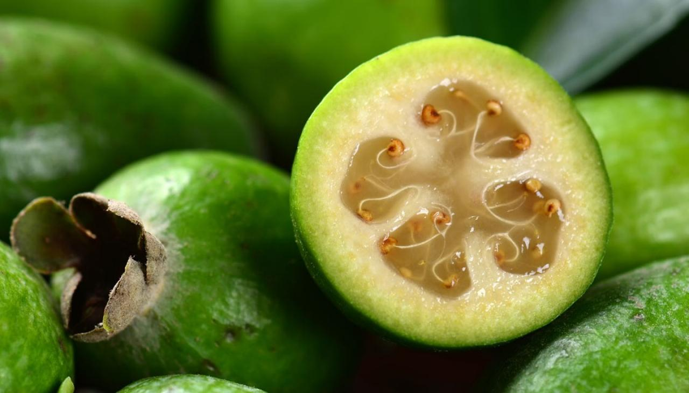

What is Feijoa Life?
Feijoa life is a place where those of us who love New Zealands iconic autumn fruit can gather and share ideas, recipes, growing tips and news.
Feijoa life is a place where those of us who love New Zealands iconic autumn fruit can gather and share ideas, recipes, growing tips and news.
Get some background information about feijoas
The Feijoa (Acca Sellowiana) is a tree native to Brazil, South America, which is evergreen, perennial shrub and small tree classified in plant family Myrtaceae.
Feijoa are commercially valuable and are cultivated in New Zealand and California. This plant is usually grown for its sweet and aromatic fruits. The plant has pale gray bark with greenish gray leaves. Feijoa plant lives for more than 45 years.
There are 21 varieties of Feijoa such as Apollo, Choiceana, Coolidge, Edenvale Improved Coolidge, Edenvale Late and so on.
| Name: | Feijoa |
| Scientific Name: | Acca Sellowiana |
| Origin | Brazil, South America |
| Colors | Lime-green |
| Shapes | Oval shape Length: 1-3 Inches Diameter: 0.5-2 Inches |
| Flesh colors | Jelly in center, surrounded by cream-colored flesh |
| Taste | Mixture of pineapple, guava, and strawberry; quince and lemon |
| Calories | 148 Kcal./cup |
| Major nutrients | Vitamin C (88.78%) Total dietary Fiber (41.05%) Carbohydrate (28.43%) Vitamin B9 (14.00%) Vitamin B6 (12.54%) |
| Health benefits | Treat inflammatory bowel disease, Prevent bacteria, Lower inflammation, Cancer prevention, Prevent constipation |